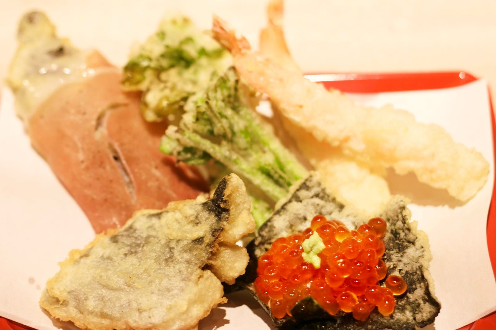
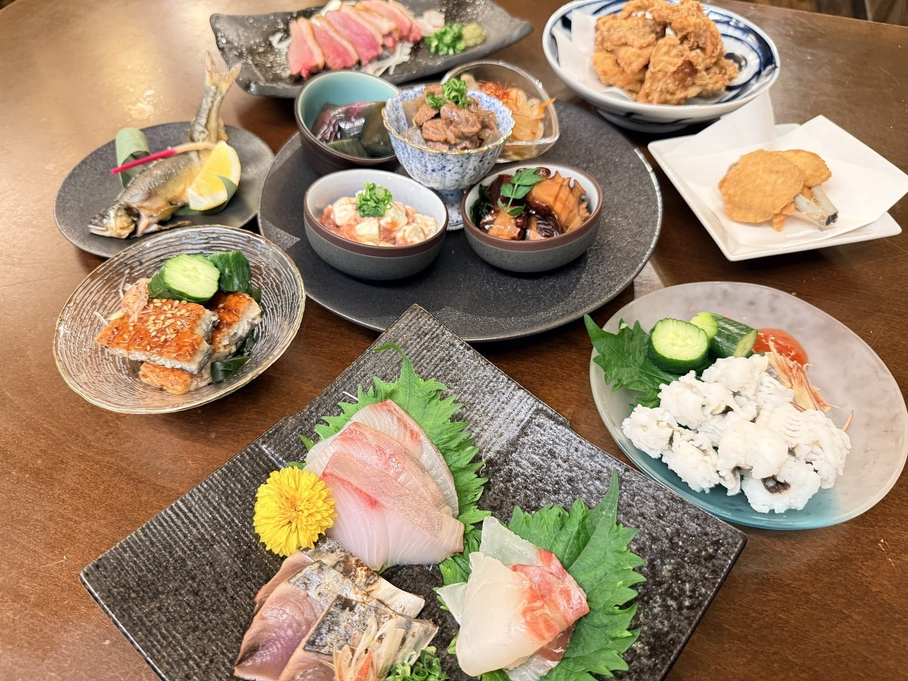
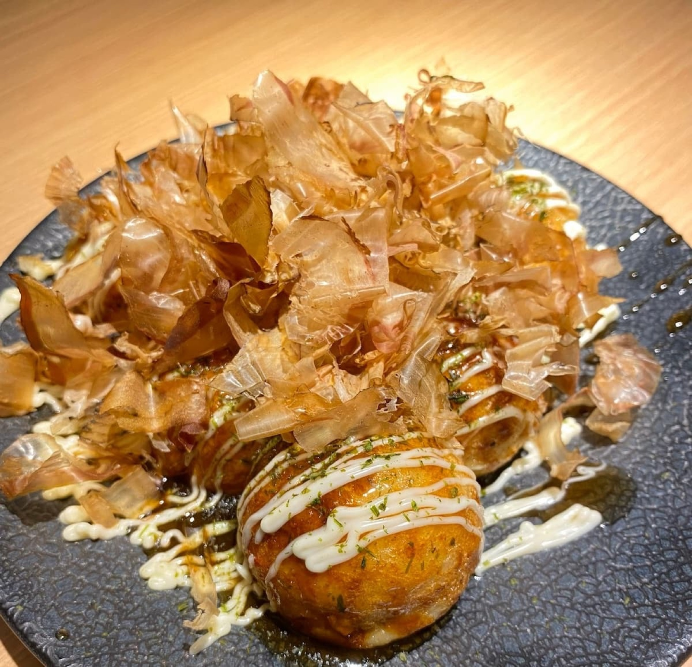
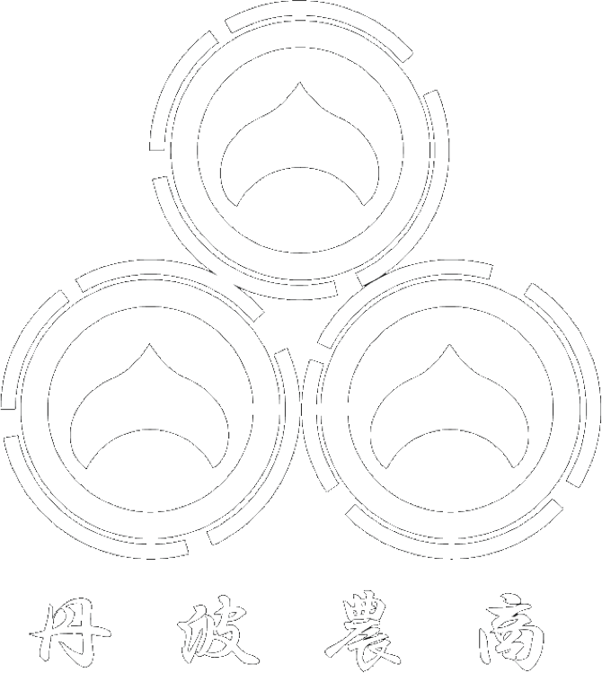
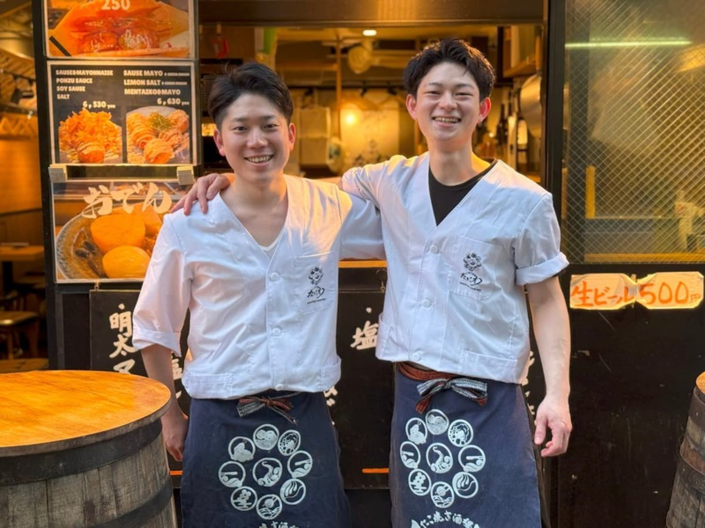
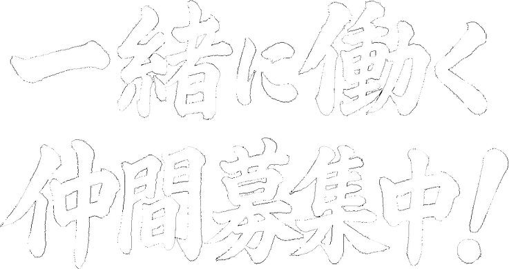
本格天ぷらを1品190円から提供。旬食材とワインを楽しめる天ぷら専門店。東京4店舗・大阪4店舗の計8店舗を展開。天ぷらに加え、刺身や前菜など季節の一品料理も充実。
”旬を本格和食でカジュアルに”小鉢五種盛りが看板メニュー。旬の食材を刺身で、小鉢で、焼きで楽しめる割烹料理屋。肩肘張らずに楽しめる店です。
本場大阪の“ふわとろ”たこ焼きと、から揚げが看板メニューの酒場。2024年に東京・丸の内に誕生。たこ焼きはもちろん、刺身やおでんなどアテも豊富。昼飲みからサク飲みまで楽しめます。
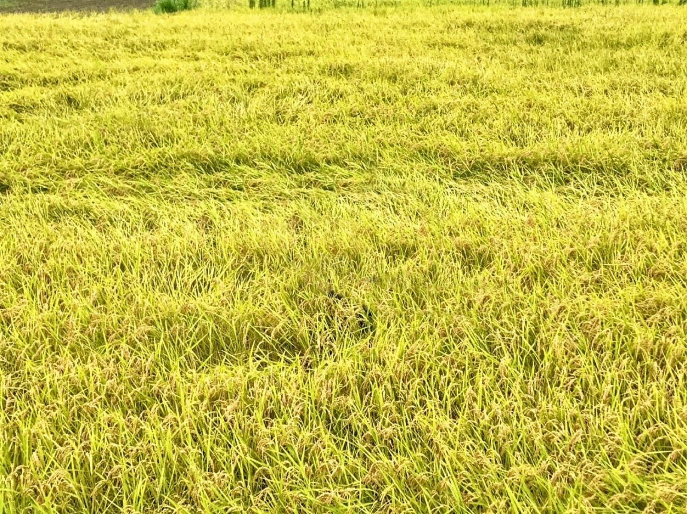
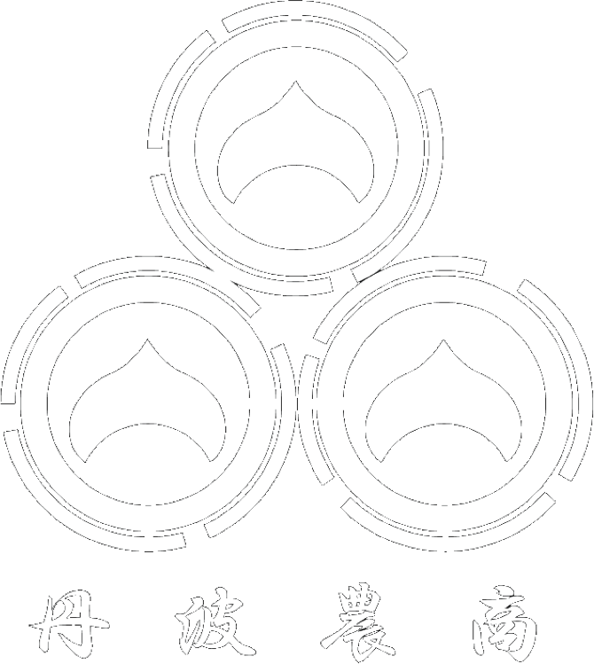
但馬牛の繁殖や、米・野菜・丹波栗の生産を手がける農業・食品加工部門。2019年に関連会社として始動。耕作放棄地で牧草（自給飼料）を作り、牛の堆肥で米を作り、それを自店舗で使うという循環型農業を実施。
自社の店を毎日回している経営AIを、飲食店のみなさまへ。注文、会計、打刻、給与、シフト、経理。店のことはKANAIが回し、人は、人にしかできないことを。
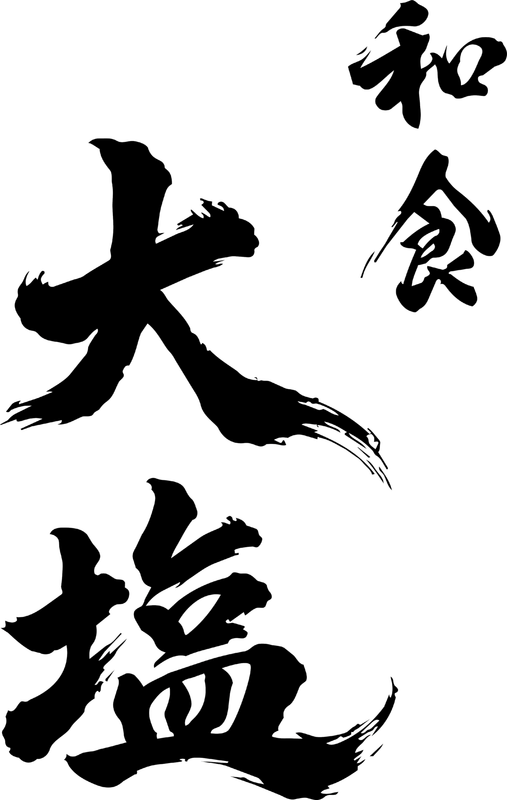
会社概要をもっと見る
入社7年目。大阪の4店舗全ての店長を歴任した後、マネージャーに就任。和食大塩の立ち上げ責任者。
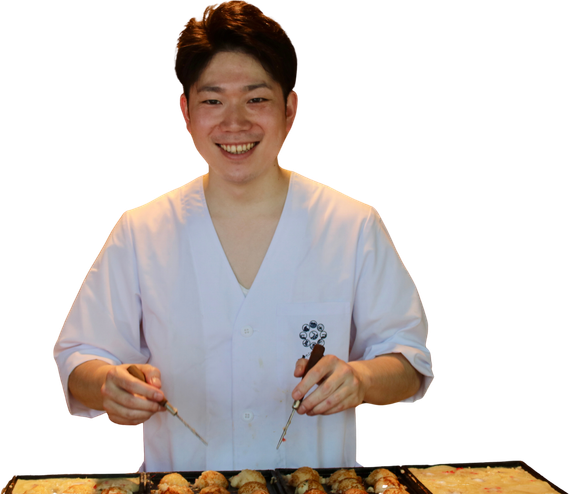
入社3年目。入社2ヶ月でたこ焼きの立ち上げを行い、一人当たり営業利益の全店最高記録を達成。
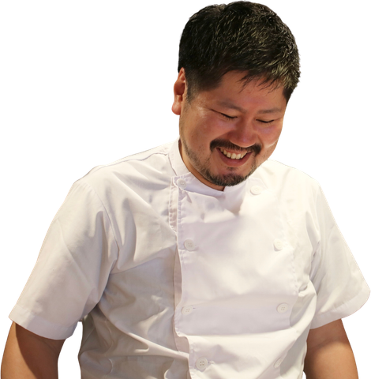
入社5年目。天ぷらとワイン大塩の料理をチェーン店レベルから専門店レベルに引き上げた。
TEL：06-6467-8233